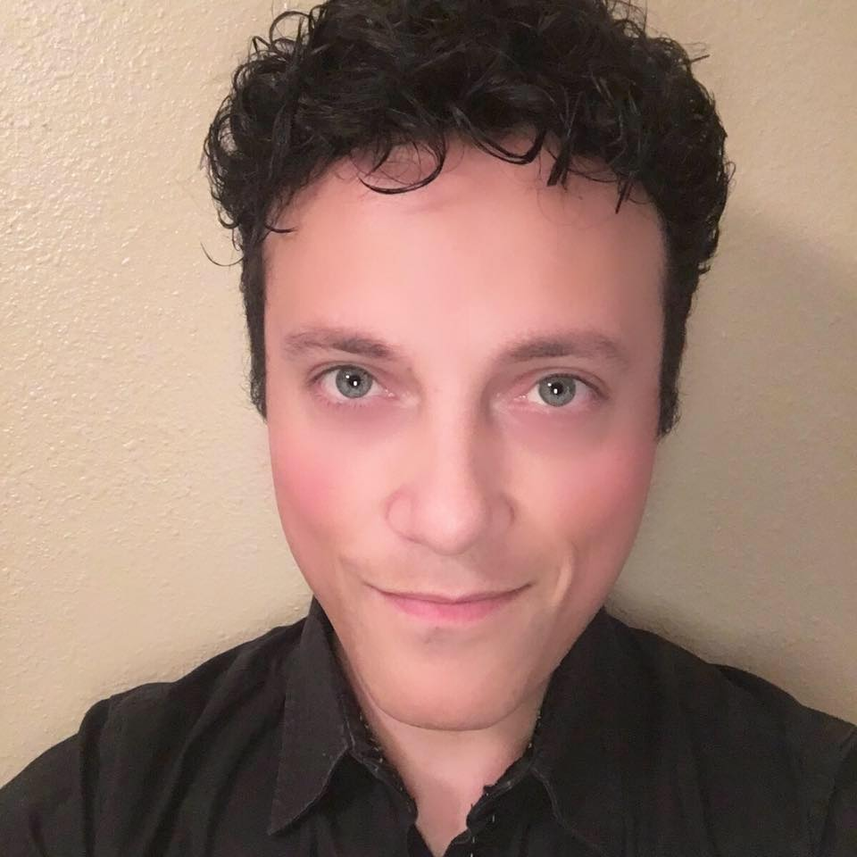

Rosselito Leal de Castro
Dados pessoais
- Brasileiro, solteiro, 37 anos
- Rua: Garibaldi 1117, ap 402
- Porto Alegre – RS, bairro: Bonfim
- Telefone: (51) 981467107
- Email: rosselito@gmail.com
Informações adicionais
- Excelente relacionamento com o público
- Boa apresentação pessoal
- Comunicação e expressão corporal polida
- Simpatia, proativo e experiência com resiliência.
Escolaridade
- Ensino Médio completo
- Colégio Marista Santo Ângelo
Cursos
ApresentaçãoAcredito que o aprendizado se faz necessário para galgar passos mais largos num futuro vindouro de oportunidades e crescimento como profissional, inclusive como pessoa. Sou deficiente auditivo, nesta situação desde abril de 2012. Desenvolvo a habilidade diária de lidar com as adversidades que a vida impõe e por conta desta nova situação patológica meu foco é ter uma oportunidade de crescimento para o segmento tecnológico, ao qual, estou buscando nesta nova etapa de minha vida. |
|---|
Dados Profissionais
Comissário de bordo: LATAM linhas aereas
- Estagiar na área de TI.
- Participar de um Projeto de Pesquisa.
- Desenvolver um Software.
Qualificações
- Exchange 2003 - Londres UK(2 meses).
- Exchange 2005 - Toronto CAN(1 mês).
- Exchange 2006 - NY USA(1 mese).
- Exchange 2008 - Londres UK(1 mês).
- Exchange 2009 - Orlando USA(1 mês).
- Exchange 2012 - Colorado USA(1 mês).
- Exchange 2013 - Miami USA(6 meses).
- Exchange 2016 - Seatle USA(1 mês).
- Exchange 2017 - Orlando USA(2 meses).
- Exchange 2014 - Buenos Aires ARG(1 mês).
- Exchange 2016 - Madrid ESP(2 meses).
Experiência Profissional
- Cargo: Comissário de Voo Principais atividades: Atendimento ao público, segurança de voo. Responsável pela segurança de passageiros a bordo de aeronave, serviço de bordo...
- Cargo: Comissário de Voo Principais atividades: Atendimento ao público, segurança de voo. Responsável pela segurança de passageiros a bordo de aeronave, serviço de bordo...
Conhecimentos e atividades realizadas
| Ides | |
|---|---|
| Visual Studio | |
| Eclipse | |
| NotePad++ | |
| Netbeans | |
| Sublime text | |
| Oracle Developer | |
| Dev C | |
| Photoshop | |
| Astah Profissional | |
| DB Main | |
| WinSCP | |
| TeamViewer | |
| Paradigm |
| Linguagens |
|---|
| Java |
| C |
| C++ |
| Phiton |
| PHP |
| CSS |
| JavaScript |
| Scratch |
| Oracle |
| MySQL |